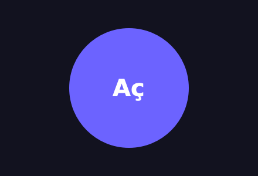
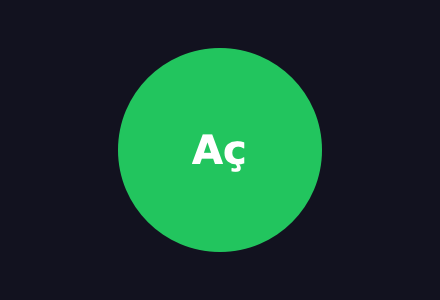
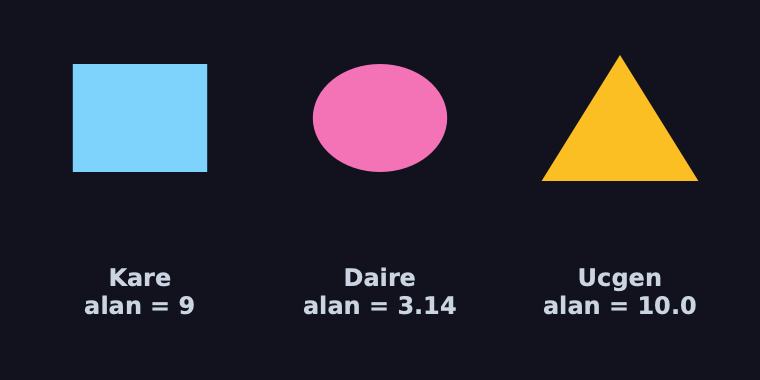

Söz Ver,
Çocuk Yazsın
Soyut Sınıflar & Arayüzler
Polimorfizm Bir Söz İster
H4'te döngü s.alan() dedi ve her şeklin bu metodu olduğuna güvendi.
Bu hafta o güveni bir sözleşmeye çeviriyoruz: metodu yazmayan sınıf nesne üretemesin.
1 · Sorun
Unutulan metot sessizce
0 ya da boş çizim döndürür.
2 · ABC
abc.ABC +
@abstractmethod: söz tutulmadan nesne yok.
3 · Qt'de
QAbstractButton kurulamaz;
ondan kendi butonumuzu türeteceğiz.
4 · Arayüz
Hiç gövde yok, yalnız söz: Protocol ve ördek tipleme.
Sonunda: soyut bir Sekil sözleşmesine uyan şekilleri çizen
bir panel.
Boş Bırakılan Metotlar
🎨 H4 · Cizim.ciz()
Atada
pass; “çocuklar ezecek” dedik. Ezmeyen çocuk ne çizer? Hiçbir şey.
🦆 H4 · Ördek
Metot yoksa AttributeError, ama ancak çağrıldığı anda.
🤷 H5 · NotImplemented
Bir değerdi. Bu hafta kardeşi NotImplementedError'u, bir
hatayı göreceğiz.
Ortak dert: hata geç fark ediliyor. Amaç, “bu metodu yazmadın” uyarısını nesne kurulurken almak.
Unuttuk, Kimse Fark Etmedi
class Sekil:
def alan(self):
return 0 # “varsayılan” cevap
class Kare(Sekil):
def __init__(self, a):
self.a = a
def alan(self):
return self.a ** 2
class Ucgen(Sekil): # alan() yazmayı unuttuk
def __init__(self, t, h):
self.t, self.h = t, h
Kare(3).alan() # 9
Ucgen(4, 5).alan() # 0😶 Sessiz yanlış
Üçgenin alanı 0 çıktı; ne hata ne uyarı. Bu sonuç bir rapora, bir faturaya girebilir.
Atadaki “varsayılan” gövde, unutkanlığı gizledi.
NotImplementedError:
Geç Ama Gürültülü
class Sekil:
def alan(self):
raise NotImplementedError("alan() yazılmalı")
class Ucgen(Sekil):
pass # yine unuttuk
u = Ucgen() # nesne kuruldu…
u.alan() # …hata ancak çağrıda
# NotImplementedError: alan() yazılmalı✅ Artık sessiz değil
Unutulan metot çağrılınca açık bir hata.
⏰ Ama geç
Nesne kurulabildi; hata o metot çağrılana kadar, belki günler sonra çıkar.
ABC +
@abstractmethod
from abc import ABC, abstractmethod
class Sekil(ABC): # soyut sınıf
@abstractmethod
def alan(self): ... # söz: çocuk yazacak
@abstractmethod
def cevre(self): ...
Sekil()
# TypeError: Can't instantiate abstract class Sekil
# without an implementation for abstract methods
# 'alan', 'cevre'
class Kare(Sekil):
def __init__(self, a):
self.a = a
def alan(self):
return self.a ** 2 # cevre() eksik
Kare(3)
# TypeError: Can't instantiate abstract class Kare
# without an implementation for abstract method 'cevre'📜 Söz
@abstractmethod: “bu metodun
gövdesi çocukta olacak”.
🚪 Kurulurken denetim
Söz tutulmamışsa nesne doğmaz; hata eksik metotları adıyla söyler.
Soyut Sınıfın Somut Metotları
class Sekil(ABC):
@abstractmethod
def alan(self): ...
@abstractmethod
def cevre(self): ...
def ozet(self): # SOMUT: sözlere güvenir
ad = type(self).__name__
return f"{ad}: alan {self.alan()}, çevre {self.cevre()}"
class Kare(Sekil):
def __init__(self, a):
self.a = a
def alan(self):
return self.a ** 2
def cevre(self):
return 4 * self.a
Kare(3).ozet() # 'Kare: alan 9, çevre 12'
isinstance(Kare(3), Sekil) # True🧩 Şablon metot
ozet() atada ve somut; çocukların tutacağı sözlere (alan,
cevre) güvenerek yazıldı.
H4'teki paintEvent → ciz() kalıbının aynısı; adı
H14'te.
Kare Hangi
Metotları Yazdı?
Kutuları işaretle, Kare()'yi kurmayı dene. İletiler
Python 3.12'de çalıştırılarak alındı.
def __init__(self): self.a = 3
def alan(self): return self.a ** 2
def cevre(self): return 4 * self.a
Somut, Soyut, Arayüz
🧱 Somut sınıf
Bütün metotlarının gövdesi var; nesnesi kurulur. Kare, QPushButton.
📐 Soyut sınıf
Yarım kalıp: bazı metotlar söz,
bazıları somut. Nesnesi kurulmaz, türetilir. Sekil,
QAbstractButton.
🔌 Arayüz
Yalnız sözler, hiç gövde yok: “şu metotları taşıyan her şey”. Python'da anahtar sözcüğü yok.
Elektrik prizi bir arayüzdür: fişin markası değil, biçimi uyuyorsa takılır.
Ne Zaman Yakalanır?
Sekil(ABC)'nin cevre'sini yazmayan Kare için hata ne zaman?QAbstractButton()
Kurulamaz
QAbstractButton()
# NotImplementedError: 'QAbstractButton' represents
# a C++ abstract class and cannot be instantiated
[c.__name__ for c in QAbstractButton.__subclasses__()]
# ['QPushButton', 'QCheckBox', 'QRadioButton', 'QToolButton']
issubclass(QCheckBox, QAbstractButton) # True🧬 H2'nin sözü
H2'de “bu hatayı H6'da göreceğiz” demiştik. QAbstractButton, bütün butonların
soyut atası: tıklama, metin, işaretlenme hazır; yalnız çizim eksik.
Dört somut çocuğu eksik parçayı kendince yazar.
Soyut Atadan Yuvarlak Buton
class YuvarlakButon(QAbstractButton): # soyut ata
def paintEvent(self, olay): # eksik parça
p = QPainter(self)
p.setRenderHint(QPainter.Antialiasing)
p.setPen(Qt.NoPen)
renk = "#22c55e" if self.isChecked() else "#6c63ff"
p.setBrush(QColor(renk))
p.drawEllipse(self.rect().adjusted(4, 4, -4, -4))
p.setPen(QColor("white"))
p.drawText(self.rect(), Qt.AlignCenter, self.text())
y = YuvarlakButon()
y.setText("Aç")
y.setCheckable(True) # QAbstractButton'dan hazır
y.click() # tıklama da hazır
y.isChecked() # True

Biz yalnız paintEvent'i yazdık;
click, setCheckable, clicked sinyali soyut atadan geldi.
Kim Ne Yaptı?
QAbstractButton: fare olayını yakala
QAbstractButton: toggle() → isChecked()
QAbstractButton: clicked sinyalini yay
YuvarlakButon.paintEvent: yeniden çiz
Dört satırdan üçü soyut atanın; biz yalnız sonuncuyu yazdık. Soyut sınıfın işi bu: işin çoğunu hazır vermek, eksik parçayı istemek.
Eksik Parçayı Yazmazsan: Görünmez Buton
class BosButon(QAbstractButton):
pass # paintEvent yazmadık
b = BosButon() # kurulur: itiraz yok
b.setText("Gör beni")
b.setCheckable(True)
b.click() # tıklanır da
b.text(), b.isChecked() # ('Gör beni', True)
# b.show() → pencere açılır ama BOŞ: hiçbir şey çizilmez🤐 Qt sessiz
QAbstractButton() doğrudan kurulamıyordu; ama çocuğu, eksik parça yazılmadan
kurulabildi. Pencere açılır, buton tıklanır, ama ekranda hiçbir şey yok.
PySide6 6.11.1'de olay döngüsüyle denendi: hata iletisi yok.
İkisini Karıştırınca: Metaclass Çatışması
class Cizim(QWidget, ABC):
pass
# TypeError: metaclass conflict: the metaclass of a
# derived class must be a (non-strict) subclass of
# the metaclasses of all its bases🏭 Metaclass
Sınıfları üreten “sınıf fabrikası”.
ABC'ninki ABCMeta, Qt'ninki Shiboken'in ObjectType'ı.
⚔️ İki fabrika
Python bir sınıfı iki farklı fabrikaya birden ürettiremez: TypeError.
Çatışma Gitti, Koruma da Gitti
class QABCMeta(ABCMeta, type(QWidget)): # birleştir
pass
class Cizim(QWidget, metaclass=QABCMeta):
@abstractmethod
def ciz(self, p): ...
class Eksik(Cizim): # ciz() yok
pass
Eksik.__abstractmethods__ # frozenset({'ciz'})
e = Eksik() # ⚠️ yine de kuruldu!
isinstance(e, QWidget) # True🔍 Ne oldu?
ABCMeta eksik metotları buldu (__abstractmethods__), ama nesneyi
Shiboken'in kurucusu üretti ve bu listeye bakmadı.
PySide6 6.11.1'de denendi: soyut Qt widget'ı yine de kuruluyor.
Kurucuda Kendimiz Denetleyelim
class Cizim(QWidget, metaclass=QABCMeta):
def __init__(self):
eksik = type(self).__abstractmethods__
if eksik: # Qt denetlemiyor, biz
raise TypeError(f"{type(self).__name__} soyut: "
f"{', '.join(sorted(eksik))} yazılmadı")
super().__init__()
@abstractmethod
def ciz(self, p): ...
class Eksik(Cizim):
pass
Eksik()
# TypeError: Eksik soyut: ciz yazılmadı✅ Söz yine kurulurken
Eksik metot varsa super().__init__()'e hiç varmadan durur.
🧭 Daha sade yol
Widget'ı soyut yapma; soyut Sekil'i widget'ın içine koy (has-a). Projede böyle yapacağız.
Python'da interface Yok, Üç Yolu Var
📐 Yalnız soyut ABC
Bütün metotları
@abstractmethod olan bir ABC. Uyan sınıf ondan türer.
🔌 Protocol
“Şu metotları taşıyan her şey.” Türemek gerekmez; biçim uyması yeter.
🦆 Ördek tipleme
Hiç yazmadan: çağır, varsa çalışır (H4). En esnek, en geç uyaran.
Java/C#'taki interface'e en çok Protocol
benzer; ama sınıfın onu ilan etmesi gerekmez.
Biçim Uyuyorsa Takılır
from typing import Protocol, runtime_checkable
@runtime_checkable
class Artirilabilir(Protocol): # arayüz: yalnız söz
def artir(self) -> None: ...
class Zamanlayici: # H4: atası yok
def __init__(self):
self.saniye = 0
def artir(self):
self.saniye += 1
isinstance(Zamanlayici(), Artirilabilir) # True
isinstance(QPushButton(), Artirilabilir) # False
isinstance(3, Artirilabilir) # False🧬 Kalıtım yok
Zamanlayici
Artirilabilir'den türemedi; yine de “bir Artirilabilir”.
🔎 runtime_checkable
isinstance
yalnız metot adlarına bakar, imzaya değil. Asıl denetim editörde (mypy).
collections.abc:
Python'un Sözleşmeleri
from collections.abc import Sized, Iterable
class Takim: # H5: kalıtım YOK
def __init__(self, uyeler):
self.uyeler = list(uyeler)
def __len__(self):
return len(self.uyeler)
t = Takim(["Ali", "Can"])
isinstance(t, Sized) # True
isinstance(t, Iterable) # False
issubclass(Takim, Sized) # True📏 H5'e bağ
__len__ yazdın: Python seni bir Sized sayar. __iter__
yazmadın: Iterable değilsin.
Dunder metotlar Python'un örtük arayüzleri;
collections.abc onlara ad verir.
isinstance,
Arayüzlere Karşı
Bir satıra tıkla. Bütün hücreler Python'da
isinstance(nesne, arayüz) ile hesaplandı.
ABC'siz
@abstractmethod Süs Olur
class Sekil: # ⚠️ ABC'den türemedi
@abstractmethod
def alan(self): ...
Sekil() # itiraz yok
Sekil().alan() is None # True🧷 Denetimi kim yapıyor?
Dekoratör yalnız bir işaret koyar; işareti okuyup nesneyi durduran ABCMeta'dır.
ABC'den türemeyen sınıfta okuyan yok.
Kural: class Sekil(ABC): yazmayı unutma.
Dört Yol, Hata Ne Zaman?
| türemek şart mı? | eksik metot ne zaman fark edilir? | Qt widget'ıyla | |
|---|---|---|---|
| gövdesiz bırakmak | evet | hiç (sessiz yanlış) | çalışır |
| NotImplementedError | evet | metot çağrılınca | çalışır |
| ABC + @abstractmethod | evet | nesne kurulurken | çatışma; birleşik metaclass korumaz |
| Protocol | hayır | editörde (mypy); isinstance ile istersen | sorunsuz |
| ördek tipleme | hayır | çağrılınca (AttributeError) | sorunsuz |
Erken yakalamak = ucuz düzeltmek. Kendi saf Python sınıflarında ABC, Qt tarafında Protocol ya da has-a.
Qt ve Arayüzler
class Cizim(QWidget, ABC): pass ne verir?Zamanlayici Artirilabilir'den türemedi. isinstance(Zamanlayici(), Artirilabilir)?Sık Yapılan Hatalar
🧷 ABC'yi unutmak
@abstractmethod tek başına hiçbir şey denetlemez.
🔤 Adı farklı yazmak
Çocukta Alan() yazarsan alan hâlâ eksik; sınıf
soyut kalır.
⚔️ Qt + ABC
class X(QWidget, ABC) çatışır; birleşik metaclass da kurulumu
engellemez. Has-a ya da elle denetim.
🤷 İki “Not”
return NotImplemented operatörde (H5), raise
NotImplementedError eksik gövdede. Yer değiştirmez.
Kural: söz erken denetlensin; Qt'de erken denetimi kendin kur.
Bu Hafta Ne Öğrendik?
✅ Gövdesiz bırakılan metot sessizce yanlış sonuç verir
✅ NotImplementedError: hata çağrıda, geç
✅ ABC + @abstractmethod: söz tutulmadan nesne kurulamaz
✅ Soyut sınıfın somut metotları sözlere güvenir (şablon metot)
✅ QAbstractButton soyut; çocuğu paintEvent'i yazar
✅ Qt + ABC: metaclass çatışması; korumayı kurucuda kendin yap
✅ Arayüz: yalnız sözler; Protocol türemeden uyar
✅ collections.abc: Sized, Iterable = dunder sözleşmeleri
Proje: Sözleşmeli Şekil Paneli
Sözleşme saf Python'da: soyut Sekil ve ilk somut
şekil Kare. Qt bu dosyada yok.
class Sekil(ABC): # arayüz: saf Python
@abstractmethod
def alan(self): ...
@abstractmethod
def ciz(self, p, w, h): ...
class Kare(Sekil):
renk = "#7dd3fc"
def __init__(self, a):
self.a = a
def alan(self):
return self.a ** 2
def ciz(self, p, w, h):
p.drawRect(QRectF(.2*w, .2*h, .6*w, .6*h))
🎯 Hedef
Daire(1) ve Ucgen(4, 5)'i ekle; üçünü yan yana çiz, altına alanlarını
yaz: 9, 3.14, 10.0. Süre: ~40 dk.
Kutu Şekli İçerir, Şekil Olmaz
class SekilKutusu(QWidget): # has-a: Sekil'i İÇERİR
def __init__(self, sekil):
super().__init__()
self.sekil = sekil # soyut türden bir nesne
def paintEvent(self, olay):
p = QPainter(self)
p.setRenderHint(QPainter.Antialiasing)
p.setPen(Qt.NoPen)
p.setBrush(QColor(self.sekil.renk))
self.sekil.ciz(p, self.width(), self.height())
kutu = SekilKutusu(Kare(3))
kutu.sekil.alan() # 9🧩 has-a
SekilKutusu bir
Sekil değil, bir Sekil taşıyor. Tek metaclass, çatışma yok.
🔁 H4'le bağ
10. satır polimorfik: kutu şeklin
türünü bilmez, ciz'i çağırır; hangi şekilse onunki çalışır.
Adım Adım Nasıl İlerleyeceksin?
1 · Sözleşme
Sekil(ABC):
alan() ve ciz(p, w, h) soyut. Test: Sekil() TypeError vermeli.
2 · Şekiller
Daire(r) ve
Ucgen(t, h); her biri renk ve iki metodu yazsın.
3 · Kutu
SekilKutusu(QWidget) bir
Sekil alır, paintEvent'te onun ciz'ini çağırır.
4 · Panel
Her şekil için bir kutu ve altında bir
QLabel: f"{ad}\nalan = {s.alan()}".
✅ Kontrol: alan()'ı yazıp ciz'i unutan bir
şekil kurulurken TypeError vermeli: “…without an implementation for abstract method 'ciz'”.
İleri Görevler Erken Bitirdiysen
⭐ Soyut özellik
@property +
@abstractmethod ile soyut bir ad özelliği: her şekil adını kendisi versin.
⭐⭐ Protocol paneli
Cizilebilir(Protocol)
tanımla; SekilKutusu ABC yerine bunu beklesin. Şekiller ABC'den türemesin.
⭐⭐⭐ Kendi butonun
QAbstractButton'dan
kare bir KutuButon türet; fare üstündeyken (underMouse()) rengi açılsın.
Hepsinde aynı soru: sözü kim veriyor, kim tutuyor, kim denetliyor?
İstisna Yönetimi & Hata Ayıklama
Bu hafta onlarca TypeError gördük. Gelecek hafta
onları yakalayacağız: try / except / finally, kendi hata sınıflarımız ve bir Qt
formunda kullanıcıya düzgün hata göstermek.